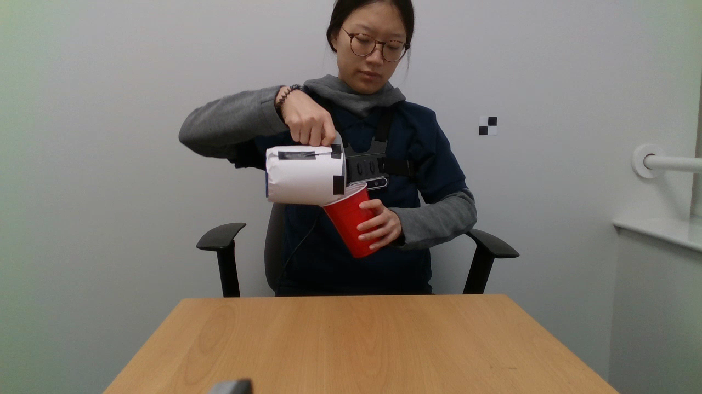
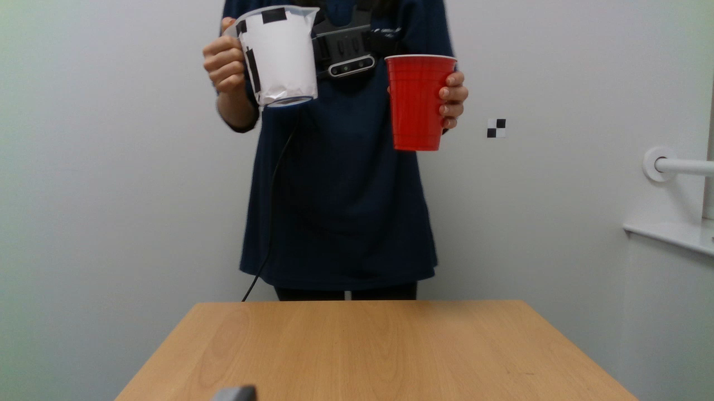
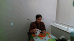
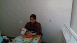
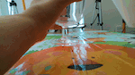

CORSMAL Containers Manipulation
The dataset consists of 1,140 audio-visual recordings with 12 human subjects manipulating 15 containers, split into 5 cups, 5 drinking glasses, and 5 food boxes. These containers are made of different materials, such as plastic, glass and paper. Each container can be empty or filled with water, rice or pasta at two different levels of fullness: 50% and 90% with respect to the capacity of the container. The combination of containers and fillings results in a total of 95 configurations acquired for three scenarios with an increasing level of difficulty, caused by occlusions or subject motions:
 Scenario 1. The subject sits in front of the robot, while a container is on a table. The subject pours the filling into the container, while trying not to touch the container, or shakes an already filled food box, and then initiates the handover of the container to the robot.
Scenario 1. The subject sits in front of the robot, while a container is on a table. The subject pours the filling into the container, while trying not to touch the container, or shakes an already filled food box, and then initiates the handover of the container to the robot.
 Scenario 2. The subject sits in front of the robot, while holding a container. The subject pours the filling from a jar into a glass/cup or shakes an already filled food box, and then initiates the handover of the container to the robot.
 Scenario 3. A container is held by the subject while standing to the side of the robot, potentially visible from one third-person view camera only. The subject pours the filling from a jar into a glass/cup or shakes an already filled food box, takes a few steps to reach the front of the robot and then initiates the handover of the container to the robot.
Each scenario is recorded with two different backgrounds and under two different lighting conditions. The first background condition involves a plain tabletop with the subject wearing a texture-less t-shirt, while the second background condition involves the table covered with a graphics-printed tablecloth and the subject wearing a patterned shirt. The lighting conditions include ceiling room lights and controlled lights. The 95 configurations are executed by a different subject for each scenario and for each background/illumination condition.
| Camera 1 | Camera 2 | Camera 3 | Camera 4 | Audio | |
| Scenario 1 Red cup (empty) |
|||||
| Scenario 2 Wine glass (50% rice) |
 |  |  |
 | |
| Scenario 3 Tea box (90% pasta) |
The dataset was acquired with 4 Intel RealSense D435i devices and one microphone array. Each Intel RealSense D435i device consists of 3 cameras and provides spatially aligned RGB, narrow-baseline stereo infrared and depth images at 30 Hz with 1280x720 pixels resolution. One D435i is mounted on a robot arm that does not move during the acquisition and provides a more realistic view of the operating area from the robot perspective. Another D435i is worn by the person at chest level to provide a first-person view, while the remaining two devices are placed at the sides of the robot arm as third-person views that look at the operating area. The microphone array is placed on a table and consists of 8 Boya BY-M1 omnidirectional Lavelier microphones arranged in a circular shape of radius 15 cm. Audio signals are sampled synchronously at 44.1 kHz with a multi-channel audio recorder. All signals are software-synchronized with a rate of 30 Hz. The calibration information (intrinsic and extrinsic parameters) for each Intel RealSense D435i and the inertial measurements of the Intel RealSense D435i used as body-worn camera are also provided.
The dataset is split into training set (9 containers, 684 configurations), public test set (3 unseen containers, 228 configurations), and private test set (3 unseen containers, 228 configurations). The containers for each set are evenly distributed among the three categories. The dataset is annotated with the capacity of the container, the filling type, the filling level, the mass of the container, the mass of the filling, the maximum width and height (and depth for boxes) of each object.
To facilitate the download, we provide archive ZIP files for each Intel RealSense D435i (view 1, view 2, view 3, view 4) and type of data (RGB, depth, infrared, IMU), and for the audio data. Depth data is provided as raw images. RGB and infrared data are provided as MP4 video files. Configurations are already shuffled and provided with a incremental numerical filename. ZIP files are split in chuncks of maximum 4.3 GB.
Because of the CORSMAL Challenges, we provide annotations only for the training set. The public testing set is currently password protected. Please email us to provide the password. The second testing set remains private for validations of the participants' solutions to the CORSMAL Challenge.
 |
||||||||
| Red cup | Small white cup | Small transparent cup | Green glass | Wine glass | Champagne flute glass | Cerela box | Biscuit box | Tea box |
Please download the data that you only need. The storage of all training set is of about 230 GB.
| Beer cup | Cocktail glass | Fusilli pasta box |
| Medium white cup | Margarita glass | Spaghetti box |
For any enquiries, questions, concerns and general feedback, please contact us.
This work is licensed under the Creative Commons Attribution-NonCommercial 4.0 International License. To view a copy of this license, visit http://creativecommons.org/licenses/by-nc/4.0/.
If you use the dataset, please use this citation:
CORSMAL Containers Manipulation (1.0) [Data set]
A. Xompero, R. Sanchez-Matilla, R. Mazzon, and A. Cavallaro
Queen Mary University of London. https://doi.org/10.17636/101CORSMAL1
You can also refer to the following publication:
The CORSMAL benchmark for the prediction of the properties of containers
A. Xompero, S. Donaher, V. Iashin, F. Palermo, G. Solak, C. Coppola, R. Ishikawa, Y. Nagao, R. Hachiuma, Q. Liu, F. Feng, C. Lan, R. H. M. Chan, G. Christmann, J. Song, G. Neeharika, C. K. T. Reddy, D. Jain, B. U. Rehman, A. Cavallaro
IEEE Access, vol. 10, April 2022. https://doi.org/10.1109/ACCESS.2022.3166906